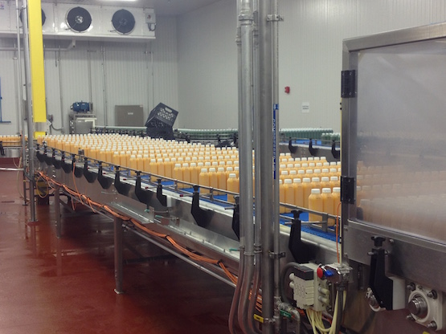

Is It Fresh?
Hack Day Team:
Brad Thornton
Mike Gee
Colin Lesage
James Fuller
The Problem
Roughly 20,000 bottles per HPP machine per day are output.
Juicery partners painstakingly reviews these bottles by hand, with a clip-board and paper.
The Opportunity
Increase partner satisfaction
Give "just in time" visibility to defect data
Correlate defect data to customer feedback
Reduce waste by identifying patterns sooner
